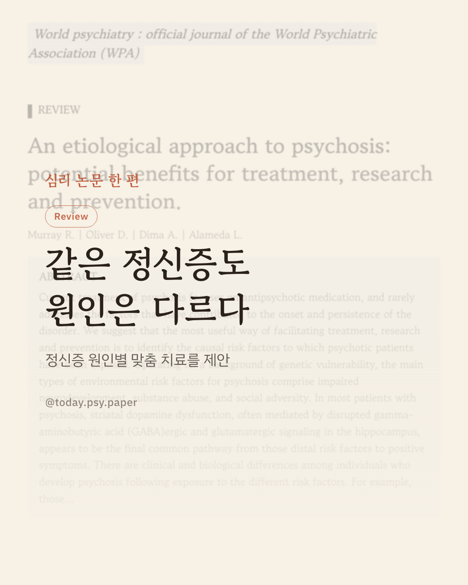
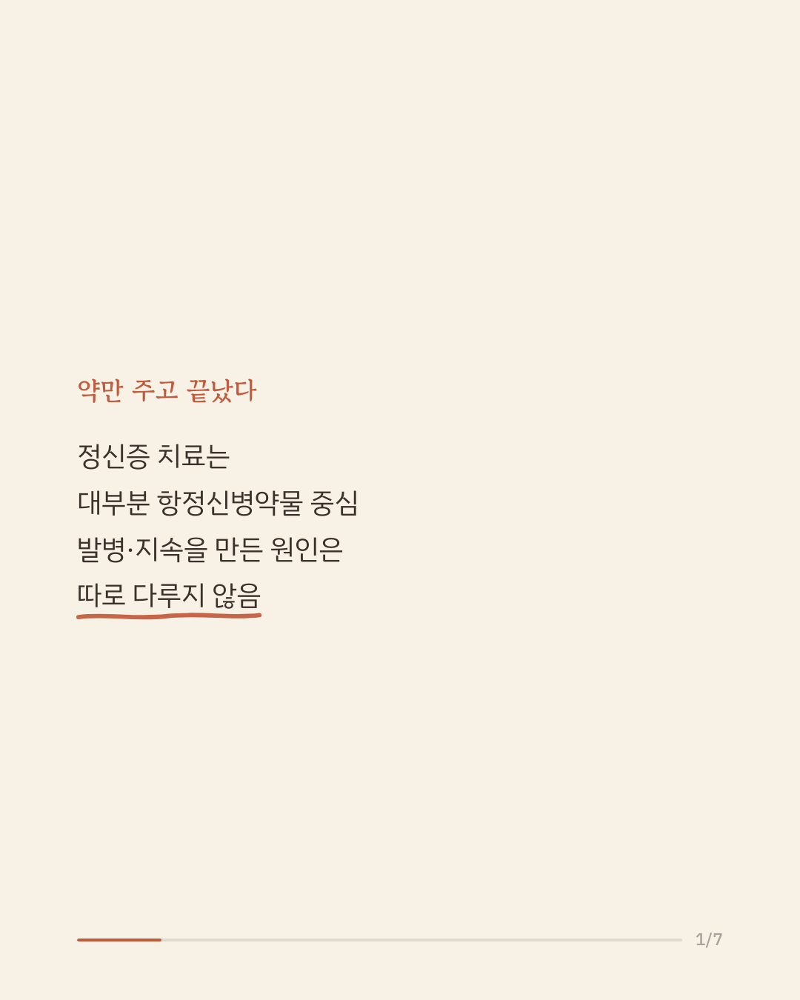
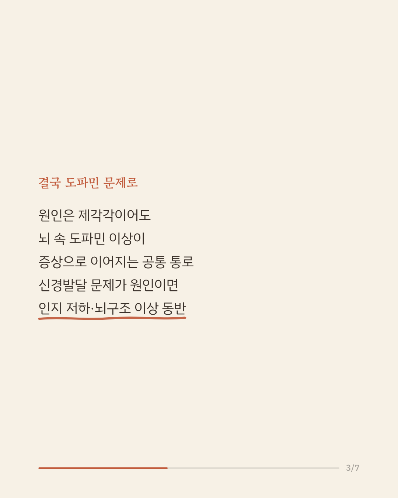
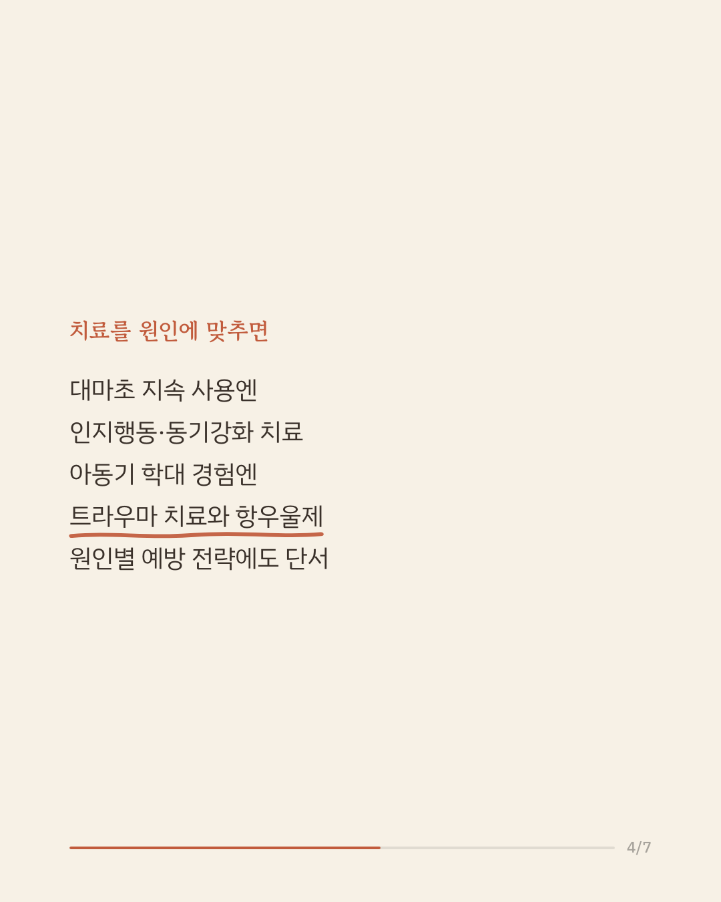
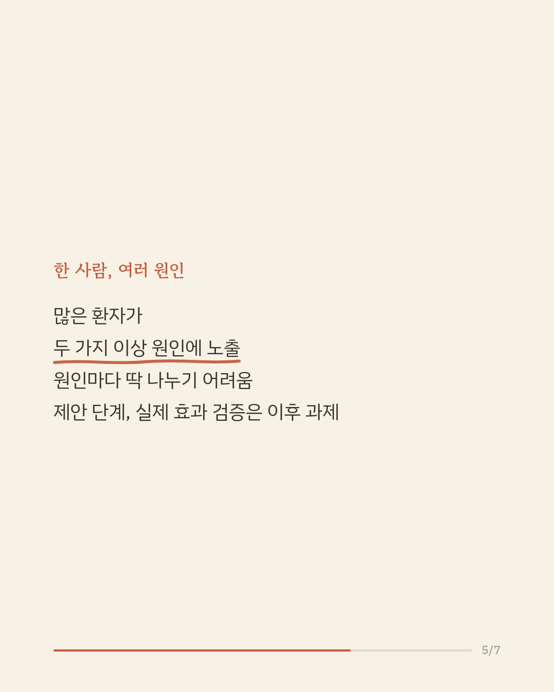
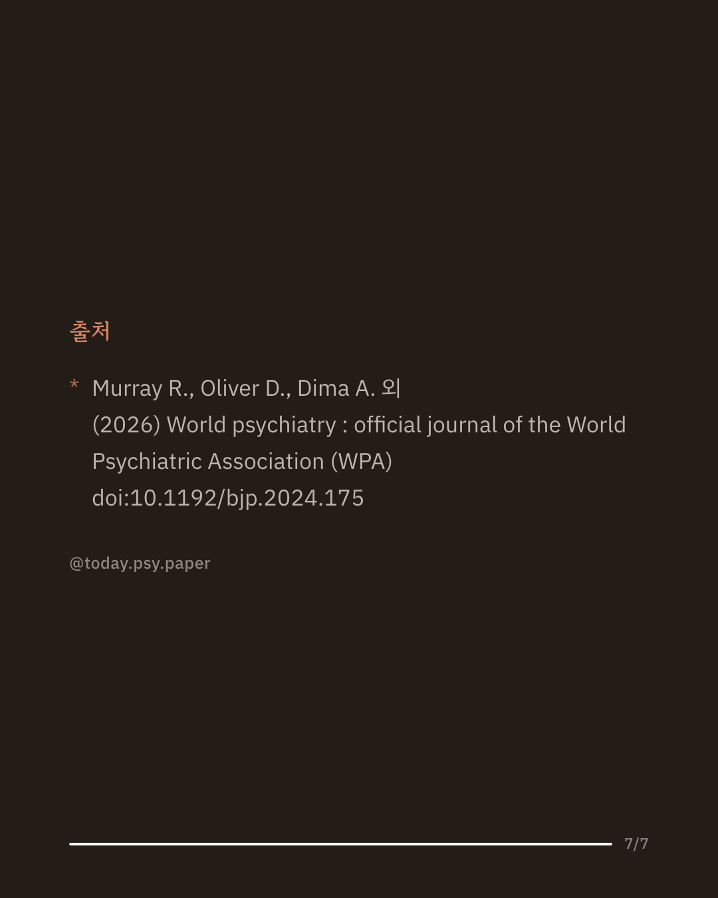

정신증 치료는 대부분 항정신병약물에 집중됩니다. 하지만 왜 그 사람에게 정신증이 생기고 지속됐는지, 그 원인은 치료 계획에 잘 반영되지 않았습니다. 이 논문은 유전적 취약성을 바탕으로 신경발달 문제, 물질 남용, 사회적 역경이라는 세 갈래 환경적 위험 요인에 주목합니다. 원인은 다르지만 결국 뇌 속 도파민 조절 이상이 증상으로 이어지는 공통 경로로 모인다고 설명하면서도, 신경발달 문제가 원인인 경우 인지 저하나 뇌 구조 이상이 함께 나타나는 등 원인별로 임상적 특징에 차이가 있다고 제안합니다. 그래서 대마초를 계속 사용하는 환자에게는 인지행동·동기강화 치료를, 아동기 학대를 경험한 환자에게는 트라우마 치료와 항우울제를 함께 고려할 수 있다고 제안합니다. 다만 이 논문은 새로운 데이터를 수집한 연구가 아니라 기존 지식을 정리해 원인 중심 접근을 제안한 이론 논문이며, 실제 많은 환자는 한 가지가 아니라 여러 원인에 동시에 노출되어 있습니다. 출처: World Psychiatry (2026), 'An etiological approach to psychosis: potential benefits for treatment, research and prevention' #임상심리 #정신건강정보 #조현병연구 #논문리뷰
python3 publish.py 42742576